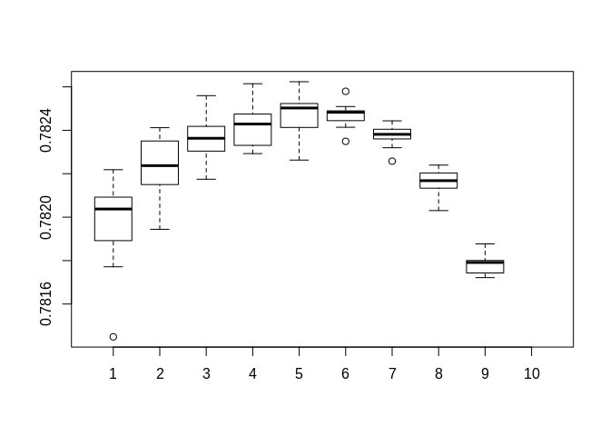
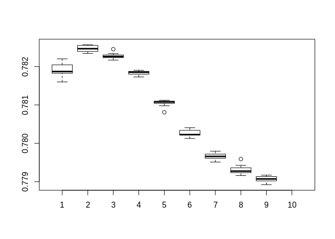
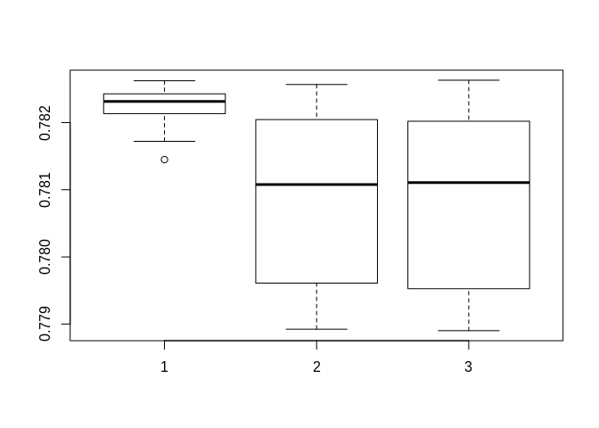
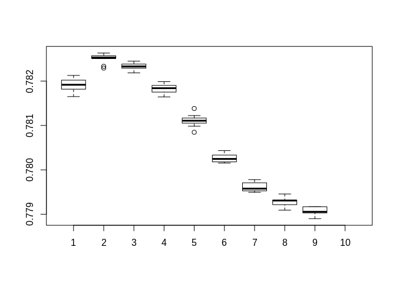
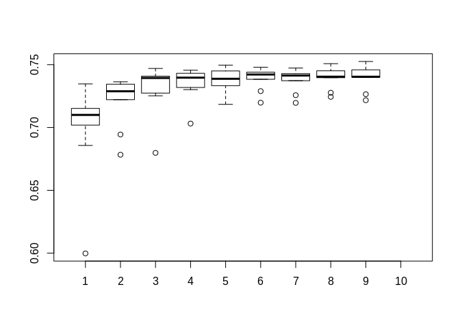
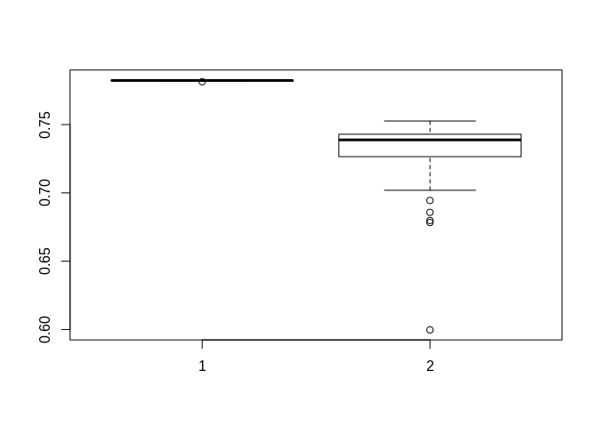

XGBoost's objective function comparison
In this document I go in depth into using XGBoost to enhence the performance of C+T by combining multiple C+T predictors. 1
Prequisites
The following packages are required to knit this document:
- bigstatsr
- bigsnpr
- data.table
- xgboost
Dataset
Please change working direction in directory
I use the "Simus" simulated dataset provided by Florian. This dataset contain ~650,000 SNPs in 2 chromosomes. 20% of them are cases and the rest 80% are controls.
C+T step
Generating a matrix of C+T with varied clumping radius and thresholds.
and are aquired in sumstats file (see sumstats.txt)
XGBoost only accept dataframe, so all FBM output must be converted to data frame
Data treatment: Oversampling
To oversampling I extract all positive (affection = 1), and append them a number of times. For this simulated dataset, I enhanced the number of cases 10 times, thus the ratio become ~70:30 (from 20:80).
XGBoost
XGBoost provide slightly better result compare to SCT. However this result heavily depend on booster and objective selection. Experiments shown that gblinear booster with count:poisson objective give the best results.
For the first experimentation, I run 9 different max_depth and 9 nrounds with count:poisson objective function. Each combination is repeated 10 times and the mean value calculated to rule out the randomess of gblinear booster
poisson_AUCs <- matrix(,nrow = 10, ncol = 10)
for (i in seq(2 : 10)){
for (j in seq(2: 10)) {
temp <- c()
for(t in seq(1:10)){
bstSparse <- xgboost(data = ds[],
label = y.train,
booster="gblinear",
max_depth = i,
eta = 1,
nthread = 2,
nrounds = j,
lambda = 0.1,
objective = "count:poisson"
)
pred <- predict(bstSparse, PRS_test[])
temp <- append(temp,AUC(pred = pred, test$fam$affection))
}
poisson_AUCs[i,j] <- mean(temp)
}
}
## [,1] [,2] [,3] [,4] [,5] [,6]
## [1,] 0.7817714 0.7823509 0.7823041 0.7822926 0.7825028 0.7824836
## [2,] 0.7820513 0.7822373 0.7823633 0.7824287 0.7822630 0.7824896
## [3,] 0.7814487 0.7821501 0.7823655 0.7826146 0.7825234 0.7825795
## [4,] 0.7820921 0.7824120 0.7824182 0.7826145 0.7825073 0.7824446
## [5,] 0.7821936 0.7824070 0.7821748 0.7823153 0.7826239 0.7824142
## [6,] 0.7819266 0.7822376 0.7822175 0.7824563 0.7823541 0.7824829
## [7,] 0.7818918 0.7820830 0.7823140 0.7823306 0.7824132 0.7824501
## [8,] 0.7820375 0.7822164 0.7824588 0.7824749 0.7825382 0.7825095
## [9,] 0.7822184 0.7819440 0.7825596 0.7823647 0.7824570 0.7823492
## [10,] NA NA NA NA NA NA
## [,7] [,8] [,9] [,10]
## [1,] 0.7823923 0.7821336 0.7818004 NA
## [2,] 0.7823814 0.7821682 0.7817430 NA
## [3,] 0.7823602 0.7821881 0.7817512 NA
## [4,] 0.7823655 0.7820304 0.7818152 NA
## [5,] 0.7822578 0.7821342 0.7818768 NA
## [6,] 0.7824436 0.7822035 0.7817998 NA
## [7,] 0.7824093 0.7822224 0.7817339 NA
## [8,] 0.7824048 0.7821033 0.7817913 NA
## [9,] 0.7823197 0.7822398 0.7817214 NA
## [10,] NA NA NA NA

I omitted the code for the next 2 experiments as they are largely similar, with exception of the option objective for xgboost function.
For the next experimentation, I run 9 different max_depth and 9 nrounds with reg:logistic objective function. Each combination is repeated 10 times and the mean value calculated to rule out the randomess of gblinear booster

For the final experimentation, I run 9 different max_depth and 9 nrounds with binary:logicraw objective function. This function is interesting since it's specific for binary classification.
Here is a composite boxplot comparing different objective functions. Index 1 is count:poisson, 2 is reg:logistic and 3 is binary:logistic


The effect of Boosters
I replicate the experiment with the gbtree booster. Every other aspect stay the same. The effect of max_depth and nrounds is similar to random forest: more depth means more stability, while more rounds might lead to overfitting.
tree_poisson_AUCs <- matrix(,nrow = 10, ncol = 10)
for (i in seq(2 : 10)){
for (j in seq(2: 10)) {
temp <- c()
bstSparse <- xgboost(data = ds[],
label = y.train,
booster="gbtree",
max_depth = i,
eta = 1,
nthread = 2,
nrounds = j,
lambda = 0.1,
objective = "count:poisson"
)
pred <- predict(bstSparse, PRS_test[])
tree_poisson_AUCs[i,j] <- append(temp,AUC(pred = pred, test$fam$affection))
}
}
## [,1] [,2] [,3] [,4] [,5] [,6]
## [1,] 0.5997502 0.6783138 0.6797928 0.7031598 0.7184346 0.7197522
## [2,] 0.6857363 0.6944414 0.7274155 0.7318843 0.7333248 0.7421854
## [3,] 0.7133489 0.7344719 0.7470404 0.7456065 0.7437271 0.7440640
## [4,] 0.7346792 0.7346642 0.7398461 0.7412047 0.7496907 0.7480144
## [5,] 0.7158010 0.7299822 0.7408819 0.7438784 0.7454125 0.7431477
## [6,] 0.7019057 0.7270527 0.7316911 0.7332872 0.7334402 0.7384122
## [7,] 0.7100347 0.7288694 0.7394506 0.7396847 0.7387767 0.7415382
## [8,] 0.7152308 0.7363614 0.7428634 0.7431836 0.7450280 0.7444436
## [9,] 0.7097638 0.7221877 0.7252510 0.7301520 0.7315682 0.7289940
## [10,] NA NA NA NA NA NA
## [,7] [,8] [,9] [,10]
## [1,] 0.7196084 0.7276948 0.7265067 NA
## [2,] 0.7405149 0.7404706 0.7459368 NA
## [3,] 0.7417071 0.7426235 0.7399623 NA
## [4,] 0.7473723 0.7508377 0.7525843 NA
## [5,] 0.7372777 0.7398243 0.7404263 NA
## [6,] 0.7414204 0.7451333 0.7419437 NA
## [7,] 0.7438240 0.7396513 0.7403887 NA
## [8,] 0.7429152 0.7452253 0.7466324 NA
## [9,] 0.7257426 0.7244041 0.7217195 NA
## [10,] NA NA NA NA

The following graph compare gbtree vs gblinear.

We can see clearly, the difference between different booster (non-linear/tree-based vs linear) booster. gblinear offer far more stable and better result compare to gbtree in this case.
This result, however, might not reflex the whole situation. As demonstrated with gblinear, objective function play a major role in both performance and stability.